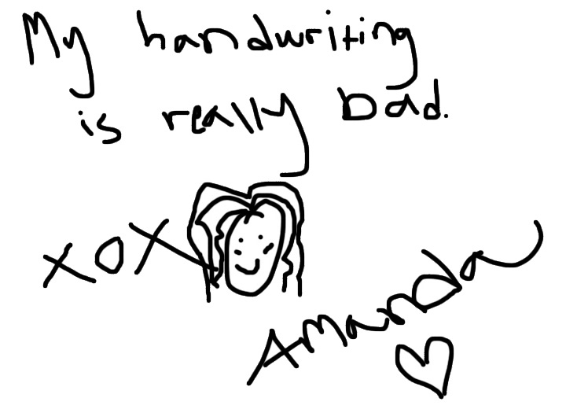

The Style Gossiper by Amanda Brohman
Amanda Brohman of The Style Gossiper is not your ordinary 19-year-old. The super-chic blogger from Sweden may be young, but she has a pretty loyal following - worldwide. In her own words, “she’d rather gossip about fashion than people”. Now based in New York City, this Style Gossiper continues to inspire her readers with her fresh, minimalistic, and oh-so-real style.
How did you break into blogging? When I was 16 years old I started getting into fashion and started to develop my own personal style, something I really hadn’t been interested in at all before then. And that’s why I started blogging, to share my newly-found interest with people who were equally as passionate about the same thing.
How long have you been blogging for? Since I was 16, so almost four years now.
You have a strong international presence - your style is world-wide influential! Tell us a little about this. First of all, thanks so much for saying that. I don’t really know how it’s reached the worldwide appeal that it has, something that happened early on in my ‘blogging career’. But I suppose I have a pretty unique yet relatable mix of Scandinavian minimalism and straight, clean lines combined with the more preppy American fashion, and then some added edgy details. People seem to like it and I’m happy that they do.
Do you still blog for VeckoRevyn? How did you get into that? No I only blogged for them for about nine months before I moved on to my own blog and at the same time changed my blog’s name to The Style Gossiper. It was a great experience working with such a big magazine, but in the end I felt I didn’t have the freedom I wanted in terms of editing content and placement of ads for example, so it felt better to be able to decide everything by myself.
Sweden is so beautiful. Is your personal style heavily inspired by Swedish architecture and interior design? Sweden and being Swedish and Scandinavian has undoubtedly inspired my style and is always going to be the foundation of my style choices. I’m almost subconsciously drawn to everything that has Scandinavian looking design and some of my absolute favorite designers are Swedish. Swedish fashion and architecture/interior design look so similar, too, everything is clean, white, minimalistic. Although it is only recently that I’ve really been drawn to the minimalistic style on another level, if you go back in my archive you will see a lot of non-Swedish looking ensembles. But I suppose becoming an adult makes me recognize my roots even more
Do you take your own photos? I edit all of my photos myself and I’m usually the ‘fashion director’ of all of my photos, meaning that I, in most cases, tell the photographer how I want the photo to come out. But since it is so complicated to take photos of myself, especially on the crowded streets of New York, I have great help from my friends and also my mom. They’re all really talented, so I’m lucky.
What camera do you use? I use a Nikon D5100 with a 35 mm f/1.8 d lens.
"Use your own unique ideas and style to make something of your own." — Amanda Brohman
In 5 words, how would you describe your personal style? Oh that’s tough. Scandinavian, minimalistic, preppy, ladylike, sophisticated yet a bit grungy. It’s a bundle of contradictions.
What are are few of your favorite blogs? Where do you look for inspiration? I have so many favorites. I really love The Sartorialist, he has a way of capturing things that it’s just impossible not to be inspired and also makes you see how some things you never thought you would wear in fact could be super cool if you wear it in the right way. I also spend too much time on Tumblr, browsing various blogs. But then I also have the great advantage to nowadays live in New York, and I get inspired everywhere I go by people on the street here, or a nice boutique, or a beautiful piece of art.
You just cut your hair - we LOVE it! Was that hard to do? I did, and thank you! I have been wanting to do it for a long time so it was a very planned decision, but a bit scary in the moment my hair dresser cut it. I have never had this short hair since I was a baby, I guess. But now I love it.
What trends do you anticipate will take over this spring/summer? That’s always something I have a hard time talking about. I don’t know why and it’s probably bad of me, but I don’t pay much attention to what the latest trends are. I sort of just develop my own style, and even when styling others, according to what I think will look good and then sometimes it happens to be really trendy or even trendsetting and sometimes it’s not.
But having said that, pastels always appear every spring and summer, which I love. I’ve bought a lot of shirts, and a suit, so I will probably be sort of strict looking this summer.
Tell us one unconventional thing that blogging has taught you. I don’t know if it’s unconventional, but don’t be too nice to companies who want you to promote their products on your blog. I see a lot of bloggers, and I have been one myself at one point, who accept any bad quality item a company sends their way and then tries to convince their readers that the ill-fitted jacket is in fact the best jacket they’ve had in years. Be honest.
If your best friend was about to start her own fashion blog, what would be one piece of must-have advice you’d give her? Funny you should say that, my best friend has a fashion blog and it’s really good: corneliahelleday.se.
But in general I would say, don’t copy anyone else’s concept because no one wants to read something that has already been said and made. Instead use your own unique ideas and style to make something of your own. And good pictures is always crucial.
